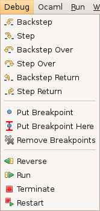
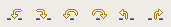

Stepping
To debug your program, you will want to make it run a step at a time. For this
purpose, you can use the Debug menu:

It provides the following stepping actions:
- Backstep: go back one step, entering function calls
- Step: go one step forward, entering function calls
- Backstep Over: go back one step, skipping function calls
- Step Over: go one step forward, skipping function calls
- Backstep Return: return to the calling function, right before the call
- Step Return: return to the calling function, right after the call
- Reverse: run the program in reverse from the current position, stopping at the
previous breakpoint or at the beginning of the program
- Run: run the program from the current position, stopping at the next breakpoint
or at the end of the program
- Restart: go back to the beginning of the program
You can also use the associated key shortcuts, or the toolbar buttons:

In the code editor, the current execution position appears as: